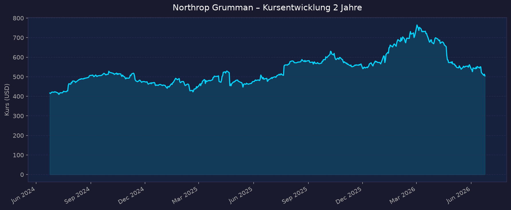
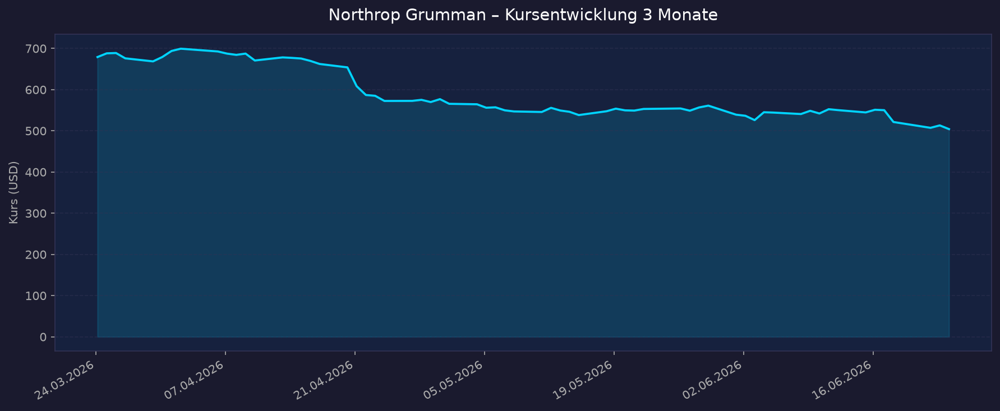

Weltraum-Einordnung: Northrop Grumman ist ein indirekter Weltraum-Play — ein profitabler, dividendenstarker Defense-/Aerospace-Konzern mit einem eigenen Segment Space Systems (JWST-Mitbau, SLS-Feststoffbooster, Cygnus-XL-Frachter zur ISS, Sentinel/GBSD-ICBM, militärische Satelliten/SDA-Tracking-Layer). Kein defizitärer Pure-Play — volle KGV-/Dividenden-/Bilanzanalyse möglich.
📈 1. Kursentwicklung
Aktueller Kurs: ~515 USD | Veränderung heute: ca. +0,7 % (Intraday-Range 508–518 USD)
Chart – 2 Jahre

Chart – 3 Monate

| Zeitraum | Kurs Start | Kurs Ende | Veränderung |
|---|---|---|---|
| 2 Jahre | ~470 USD | ~515 USD | ca. +10 % |
| 3 Monate | ~680 USD | ~515 USD | ca. −24 % |
| 52-Wochen-Hoch | — | 774,00 USD | — |
| 52-Wochen-Tief | — | 481,28 USD | — |
| YTD 2026 | — | — | ca. −11 % (Finviz) |
Beobachtung: Deutliche Korrektur seit dem 52-Wochen-Hoch (774 USD). Auslöser war u. a. die US-Iran-Deeskalation am 18.06.2026 (Wegfall der geopolitischen Risikoprämie für Defense-Werte) sowie eine kapitalintensive Produktionshochlaufphase (B-21, Feststoffmotoren). Der Kurs notiert aktuell nahe dem 52-Wochen-Tief und damit klar unter dem Analysten-Konsensziel (~737 USD).
🔗 TradingView: https://www.tradingview.com/symbols/NYSE-NOC/
💹 2. KGV-Entwicklung (Kurs-Gewinn-Verhältnis)
Aktuelles KGV (TTM): ~15,8 (EPS TTM ~32,0 USD)
| Zeitraum | KGV | Einordnung |
|---|---|---|
| Aktuell (Jun '26) | ~15,8–16,1 | Unter dem 5-Jahres-Schnitt (~19) → eher günstig |
| Ende 2025 (FY) | 19,5 | Nahe historischem Mittel |
| FY 2024 | 16,4 | Günstig |
| FY 2023 | 34,3 | Ausreißer nach oben (MTM-belastetes Jahr) |
| FY 2022 | 17,2 | Normalbereich |
Bewertung: Mit ~15,8 liegt das KGV unter dem 3-Jahres-Schnitt (~23) und dem 5-Jahres-Schnitt (~19) und nahe dem 10-Jahres-Durchschnitt (~18,8). Der Kursrückgang 2026 hat die Aktie auf eine der günstigsten Bewertungen der letzten Jahre gedrückt — vorausgesetzt die EPS-Guidance (adj. ~27,65 USD für 2026) hält. Hinweis: Das 2023er-KGV (34,3) ist durch Mark-to-Market-Pensionseffekte verzerrt und nicht repräsentativ.
💰 3. Sales Multiple (Kurs-Umsatz-Verhältnis / P/S)
Aktuelles P/S-Verhältnis: ~1,7
| Zeitraum | P/S Ratio | Einordnung |
|---|---|---|
| Aktuell (Jun '26) | ~1,70–1,72 | Am unteren Rand der Mehrjahres-Spanne |
| Ende 2025 (FY) | 1,94 | — |
| FY 2024 | 1,67 | — |
| FY 2023 | 1,80 | — |
| FY 2022 | 2,29 | Höchster Wert der Periode |
Trend: Fallend / am unteren Rand. Das P/S liegt mit ~1,7 unter dem FY-2025-Wert (1,94) und deutlich unter 2022 (2,29). Bei einem Konzern mit ~10,8 % Nettomarge und ~28,5 % ROE ist ein P/S um 1,7 historisch moderat. Für Defense-Primes ist ein P/S knapp unter 2 üblich — NOC ist damit im Branchenvergleich nicht teuer.
📊 4. Handelsvolumen (Trading Volume)
| Zeitraum | Ø Tagesvolumen | Auffälligkeiten |
|---|---|---|
| 3-Monats-Durchschnitt | ~0,87–1,03 Mio Aktien | Erhöht durch Korrektur-Phase |
| 10-Tage-Durchschnitt | ~1,03 Mio Aktien | Über dem 3M-Schnitt |
| Volumen-Peak (2026) | Spitzen >2 Mio | 19.–21.06.2026 (Iran-Deal, −5 % Tage) |
Volumentrend: Das Volumen ist in der Korrekturphase Juni 2026 erhöht (mehrere −5 %-Tage mit überdurchschnittlichem Umsatz nach der Iran-Deeskalation). Außerhalb solcher Ereignisse liegt NOC bei rund 0,8–1,0 Mio Aktien/Tag — typisch für einen Large-Cap-Defense-Wert.
🏦 5. Insider Trades (letzte ~18 Monate)
| Datum | Name | Funktion | Kauf/Verkauf | Anzahl Aktien | Wert (USD) |
|---|---|---|---|---|---|
| 02.03.2026 | Kathryn G. Simpson | General Counsel | Verkauf | 873 | ~650.000 (745 USD) |
| 19.02.2026 | Michael A. Hardesty | CAO | Verkauf | 147 | ~107.700 |
| 18.02.2026 | Benjamin R. Davies | VP | Verkauf | 2.189 | ~1.575.000 |
| 06.02.2026 | Kathy J. Warden | CEO | Verkauf | 20.000 | ~14.176.000 |
| 02.02.2026 | Mark A. Welsh III | Director | Verkauf | 95 | ~65.000 |
| 06.01.2026 | Kathy J. Warden | CEO | Verkauf | 3.000 | ~1.845.000 |
| 05.01.2026 | Kathy J. Warden | CEO | Verkauf | 7.000 | ~4.200.000 |
| 24.11.2025 | Mark A. Welsh III | Director | Verkauf | 97 | ~54.700 |
3-Monats-Überblick: Reine Netto-Verkäufe, getrieben vom CEO (Warden, >27 Mio USD über mehrere Tranchen). Viele Verkäufe via Rule-10b5-1-Pläne (vorab terminiert) und nahe den Hochs (600–745 USD). ~12-Monats-Überblick: Keine Insider-Käufe; Insider verkauften ~57.736 Aktien (~34,5 Mio USD). Insider-Besitz nur ~0,21 % der ausstehenden Aktien. → Kein positives Insider-Signal, aber bei Großkonzernen mit aktien-basierter Vergütung sind planmäßige Verkäufe normal und kein zwingendes Warnsignal.
Quelle: SEC Edgar / OpenInsider / MarketBeat
🩳 6. Short-Positionen
Aktuelle Short Quote: ~1,28 % des Streubesitzes (Float)
| Zeitraum | Short Interest | Veränderung |
|---|---|---|
| Aktuell (Jun '26) | ~1,28 % (~1,82 Mio Aktien) | — |
| Short Ratio (Days-to-Cover) | ~2,1 Tage | niedrig |
| Historischer Bereich | nicht verfügbar | — |
Einschätzung: Niedrig. Eine Short Quote von ~1,3 % und nur ~2 Tage Eindeckungszeit sind für einen Large-Cap-Defense-Wert sehr gering — es gibt keine nennenswerte Spekulation auf fallende Kurse. Der Kursrückgang 2026 ist also nicht short-getrieben, sondern Folge von Sektor-Rotation und fundamentalen Sorgen (CapEx, Budget).
🗞️ 7. Aktuelle Nachrichten
| Datum | Quelle | Nachricht | Relevanz |
|---|---|---|---|
| 18.–21.06.2026 | AInvest / TradingKey | US-Iran-Interimsabkommen drückt Defense-Sektor; NOC −5 %-Tage, Risikoprämie schrumpft | Hoch |
| Jun 2026 | Investing.com | Jefferies senkt Kursziel 660→620 USD (Rating bleibt „Buy"); FCF-Yield-Argument | Hoch |
| Jun 2026 | Investing.com | EAC-Belastung 71 Mio USD auf Fixpreis-Programm GEM 63XL erinnert an Margenrisiken | Mittel |
| Apr 2026 | StockTitan / Investing.com | Q1 2026: Umsatz 9,9 Mrd, EPS 6,14 USD, Marge 10,8 %; Guidance bestätigt | Hoch |
| Apr 2026 | Air & Space Forces | Sentinel-ICBM-Programm wieder voll in Arbeit; B-21-Produktion +25 % (2,5 Mrd USD Eigeninvest) | Hoch |
| 17.06.2026 | div. | Quartalsdividende auf 2,47 USD erhöht (zuvor 2,31 USD) — 23. Jahr in Folge | Hoch |
| 19.12.2025 | SatNews | SDA vergibt 764 Mio USD für 18 Satelliten (Tranche-3-Tracking-Layer) an NOC | Mittel |
| 2024/2025/2026 | Wikipedia / NextSpaceflight | Cygnus-XL-Frachtmissionen zur ISS (auf Falcon 9, da Antares-330 noch nicht operativ) | Mittel |
| Jan 2026 | SatNews | Space-Systems-Umsatz 2025 −8 % (zivile Headwinds); Erholung 2026 erwartet (~11 Mrd) | Mittel |
| 11.12.2024 | StockTitan | 3 Mrd USD neues Aktienrückkaufprogramm (Gesamtautorisierung ~4,2 Mrd) | Mittel |
Sentiment: Gemischt bis leicht negativ (kurzfristig). Operativ stark (Backlog 96 Mrd USD, EPS-Beats, Dividendenwachstum), aber kurzfristig belastet durch Sektor-Rotation nach Friedenssignalen, gesenkte Kursziele und CapEx-/Fixpreis-Sorgen. Analysten-Konsens bleibt mehrheitlich „Buy" mit Zielen weit über dem aktuellen Kurs.
📋 8. Letzte 3 Quartalsberichte
Q1 2026 (gemeldet 21.04.2026)
| Kennzahl | Ist | Erwartung | Abweichung |
|---|---|---|---|
| Umsatz (Revenue) | 9,9 Mrd USD | ~9,8 Mrd | ca. +1 % (+4 % YoY) |
| EPS (verwässert) | 6,14 USD | ~6,05 USD | +1,5 % |
| Segment-Marge | 10,8 % | — | +Verbesserung |
| Free Cashflow | Guidance 3,1–3,5 Mrd (FY) | — | — |
Guidance: FY-2026-Umsatz 43,5–44 Mrd USD bestätigt; adj. EPS ~27,65 USD (Mitte); CapEx 1,85 Mrd; FCF 3,1–3,5 Mrd. Treiber: B-21 (+25 % Kapazität) und Sentinel-Beschleunigung. Backlog 96 Mrd USD, Net Awards 9,8 Mrd. Kursreaktion: Aktie gab trotz Beat leicht nach (Stock dips) — Markt fokussierte CapEx-Ramp und nur moderates organisches Wachstum.
Q4 2025 (gemeldet 27.01.2026)
| Kennzahl | Ist | Erwartung | Abweichung |
|---|---|---|---|
| Umsatz (Revenue) | 11,7 Mrd USD | in line | +10 % YoY |
| EPS (verwässert) | 7,23 USD | 6,99 USD | +3,4 % |
| Operating-Marge | 10,9 % | — | — |
| Backlog | 95,7 Mrd USD (Rekord) | — | Book-to-Bill 1,10 |
Guidance (Gesamtjahr 2025): Umsatz 42,0 Mrd USD, EPS 29,08 USD (MTM-adj. 26,34 USD). FY-2026-Guidance: 43,5–44 Mrd Umsatz, adj. EPS ~27,65 USD. Kursreaktion: Earnings „beat expectations" — überwiegend positiv aufgenommen; Rekord-Backlog als Stärke gewertet.
Q3 2025 (gemeldet 21.10.2025)
| Kennzahl | Ist | Erwartung | Abweichung |
|---|---|---|---|
| Umsatz (Revenue) | 10,4 Mrd USD | ~10,72 Mrd | −2,8 % (Miss; +4 % YoY) |
| EPS (verwässert) | 7,67 USD | 6,51 USD | +17,8 % (deutlicher Beat) |
| Segment-Marge | 12,3 % | — | +80 Bp |
| Nettogewinn | ~1,1 Mrd USD | — | — |
Guidance: FY-2025-Umsatz auf 41,70–41,90 Mrd gesenkt (von 42,05–42,25), aber adj. EPS auf 25,65–26,05 USD angehoben (von 25,00–25,40) — Margenexpansion trotz Umsatzschwäche. Kursreaktion: Gemischt — EPS-Beat und höhere Gewinn-Guidance positiv, Umsatz-Miss dämpfte.
🌍 9. Marktkontext & Wettbewerb
(eigene WebSearch-Recherche — kein market-research-Skill für diesen Auftrag)
Markt / Branche: Defense Prime mit eigenem Space-Systems-Segment. Die globale Weltraumwirtschaft wird 2026 je nach Quelle auf ~470–626 Mrd USD geschätzt und soll bis 2030–2033 Richtung 0,8–1,5 Bio. USD wachsen (CAGR ~8 %). NOCs Space-Systems-Segment erzielte 2025 ~11,7 Mrd USD Umsatz (~28 % des Konzernumsatzes), 2025 −8 % YoY (zivile Headwinds, Übergang großer Entwicklungsverträge), Erholung 2026 auf ~11 Mrd erwartet.
Konkreter Weltraum-Bezug (indirekter Play):
- JWST (James-Webb-Teleskop) — NOC war Hauptauftragnehmer beim Bau; Folgeprogramme im zivilen Space-Bereich.
- SLS-Feststoffbooster & Feststoffmotoren (Solid Rocket Motors) — 2 Mrd USD Investition; auch Basis für Sentinel.
- Cygnus / Cygnus XL — ISS-Frachter (aktuell auf Falcon 9, da Antares 330 noch nicht operativ).
- Sentinel / GBSD — landgestütztes ICBM-Modernisierungsprogramm; 2026 beschleunigt.
- Militärische Satelliten — SDA Tranche-3-Tracking-Layer (764 Mio USD, 18 Satelliten, Dez 2025).
| Wettbewerber | Stärke | Schwäche |
|---|---|---|
| Lockheed Martin (LMT) | Größter Defense-Prime, F-35, starke Space-Division | Hohe Abhängigkeit von F-35; Fixpreis-Risiken |
| Boeing Defense, Space & Security | Breites Portfolio, NASA/SLS-Beteiligung | Chronische Verlustprogramme, Konzernprobleme |
| RTX (Raytheon) | Raketen/Missile-Defense, Sensorik | Komplexer Mischkonzern, Lieferketten |
| General Dynamics | Diversifiziert (Land, Gulfstream, IT) | Geringerer Space-Anteil |
| SpaceX (ab 12.06.2026 börsennotiert, SPCX) | Kostenführer Launch, Starlink, ~1,75 Bio USD Bewertung | Kein Defense-Prime im klassischen Sinn; Konzentrationsrisiko |
Branchentrends: (1) Rekordhohe Defense-Backlogs (NOC 96 Mrd USD) bei gleichzeitiger Budget-Unsicherheit (1,5-Bio-USD-DoD-Budget, Supplemental-Streit). (2) SpaceX-Börsengang (12.06.2026, Ticker SPCX, ~1,75 Bio USD) hat den Sektor 2026 befeuert und Kapital teils in Pure-Plays/SpaceX umgelenkt — für Defense-Primes wie NOC eher neutral, aber Launch-Wettbewerb (Cygnus fliegt auf Falcon 9) zeigt Abhängigkeit. (3) Geopolitische Entspannung (US-Iran-Deal 18.06.2026) komprimiert die Risikoprämie kurzfristig.
Marktposition: Führend bei strategischen US-Programmen (B-21 Stealth-Bomber als Quasi-Monopol, Sentinel-ICBM, militärische Satelliten). Hohe Eintrittsbarrieren, langlaufende Regierungsaufträge. Risiken aus dem Marktumfeld: US-Budget-/Haushaltsstreit, Fixpreis-Verträge mit EAC-Belastungen (z. B. GEM 63XL −71 Mio), zivile Space-Schwäche, kapitalintensive Hochlaufphase (FCF-Druck), geopolitische Entspannung mindert Defense-Prämie.
🧮 Bewertungs-Score
| Kriterium | Score (1–10) | Begründung |
|---|---|---|
| Bewertung | 8,0 | KGV ~15,8 unter 3J-/5J-Schnitt (23 / 19); P/S ~1,7 am unteren Rand. Nach −24 % in 3 Monaten historisch günstig — solange EPS-Guidance hält. |
| Wachstum & Momentum | 5,5 | Solides organisches Wachstum (~5 %), Rekord-Backlog (96 Mrd, Book-to-Bill 1,10), aber negatives Kursmomentum (nahe 52W-Tief) und Space-Segment 2025 −8 %. |
| Bilanz & Sicherheit | 7,0 | Debt/Equity ~1,0 (solide für Defense), Payout-Ratio ~29 % (Dividende gut gedeckt), FCF 3,1–3,5 Mrd; aber CapEx-Ramp (1,85 Mrd) drückt FCF kurzfristig. |
| Qualität & Wettbewerbsposition | 8,5 | ROE ~28,5 %, Nettomarge ~10,8 %, B-21-Quasi-Monopol, Sentinel, hohe Eintrittsbarrieren, 23 Jahre Dividendenwachstum. |
| Chancen vs. Risiken | 6,0 | Chancen: günstige Bewertung, Backlog, Buyback (3 Mrd), Space-Erholung 2026. Risiken: Budget-Streit, Fixpreis-EACs, Friedensdividende, Insider nur Verkäufe. |
Gewichteter Gesamtscore: 7,0 / 10 (Gewichtung: Bewertung 25 %, Qualität 25 %, Bilanz 20 %, Chancen/Risiken 15 %, Wachstum/Momentum 15 % → 8,0·0,25 + 8,5·0,25 + 7,0·0,20 + 6,0·0,15 + 5,5·0,15 = 7,3; konservativ auf 7,0 abgerundet wegen schwachem Kursmomentum und reinen Insider-Verkäufen.)
5-Jahres-Szenario (Horizont 2031)
Heutiger Kurs ~515 USD. Dividende aktuell ~9,9 USD/Jahr (4×2,47 USD), ~1,9 % Rendite, wachsend ~10 %/Jahr.
| Szenario | Annahmen | Kurs 2031 | Kursrendite | + Dividenden | Gesamtrendite (grob) |
|---|---|---|---|---|---|
| Bär | Budget-Kürzungen, anhaltende Friedensdividende, Fixpreis-Verluste, EPS stagniert, KGV ~13 | ~450 USD | ca. −13 % | ~+11 % | ca. −2 % |
| Base | EPS wächst ~7 %/Jahr (Guidance hält), Backlog wird abgearbeitet, KGV normalisiert ~17 | ~700 USD | ca. +36 % | ~+11 % | ca. +47 % |
| Bull | B-21/Sentinel-Hochlauf + Space-Erholung, EPS ~10 %/Jahr, Re-Rating KGV ~19, Buybacks | ~900 USD | ca. +75 % | ~+12 % | ca. +87 % |
Annahmen: Dividendensumme über 5 Jahre grob ~55–60 USD/Aktie (steigend); KGV-Bandbreite an historischer Spanne (10J-Schnitt ~18,8) orientiert; keine Garantie, rein illustrativ.
📝 Gesamteinschätzung
Stärken:
- Profitabler, dividendenstarker indirekter Weltraum-Play mit echtem Space-Segment (~28 % Umsatz): JWST, SLS/Feststoffmotoren, Cygnus XL, Sentinel/GBSD, militärische Satelliten.
- Günstige Bewertung nach −24 % in 3 Monaten: KGV ~15,8 (unter 5J-Schnitt 19), P/S ~1,7 am unteren Rand.
- Sehr hohe Qualität: ROE ~28,5 %, Nettomarge ~10,8 %, Rekord-Backlog 96 Mrd USD, Book-to-Bill 1,10.
- Aktionärsfreundlich: 23 Jahre Dividendenwachstum in Folge (Payout nur ~29 %), 3-Mrd-USD-Buyback, frische Dividendenerhöhung (2,47 USD).
- Strategische Quasi-Monopole (B-21-Bomber, Sentinel-ICBM) mit hohen Eintrittsbarrieren.
Risiken:
- Kurzfristig negatives Momentum (nahe 52W-Tief) nach US-Iran-Deeskalation; schrumpfende Defense-Risikoprämie.
- CapEx-intensive Hochlaufphase (B-21, Feststoffmotoren) drückt Free Cashflow; Analysten senkten Kursziele (Jefferies 620, Bernstein 660).
- Fixpreis-Verträge mit EAC-Belastungen (GEM 63XL −71 Mio USD) — wiederkehrendes Margenrisiko.
- US-Budget-Unsicherheit (DoD-Budget, Supplemental-Streit) und zivile Space-Schwäche (Segment 2025 −8 %).
- Insider: ausschließlich Verkäufe (CEO >27 Mio USD), keine Käufe — kein positives Signal.
Fazit: Northrop Grumman ist ein qualitativ hochwertiger, profitabler Defense-Prime mit echtem Weltraum-Standbein, der nach einem Kursrückgang von rund 24 % seit März 2026 zu einer der günstigsten Bewertungen seiner jüngeren Historie notiert (KGV ~15,8). Die operativen Fundamentaldaten (Rekord-Backlog, EPS-Beats, Margenexpansion, 23 Jahre Dividendenwachstum) sind stark, der Konsens bleibt mehrheitlich „Buy" mit Zielen weit über dem aktuellen Kurs. Dem stehen kurzfristig eine geopolitische Entspannung, FCF-Druck aus der CapEx-Phase und reine Insider-Verkäufe gegenüber. In Summe ein eher defensiv-werthaltiges Profil mit Score 7,0/10 und attraktivem Base-Case-Chance-Risiko-Verhältnis für langfristige Anleger.
Datenquellen: Yahoo Finance · Finviz · StockAnalysis.com · FinanceCharts · MarketBeat · OpenInsider · SEC Edgar · Investing.com · StockTitan · Air & Space Forces · SatNews · AInvest · TradingKey · GMInsights/OrbitalRadar (Space-Markt) · yfinance (Charts) Kursdaten und Kennzahlen Datenstand 2026-06-24; einige historische Tabellenwerte gerundet/approximiert.
⚠️ Keine Anlageberatung — rein informative Auswertung öffentlich zugänglicher Daten.